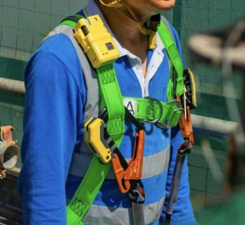
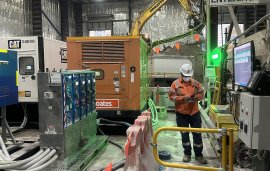
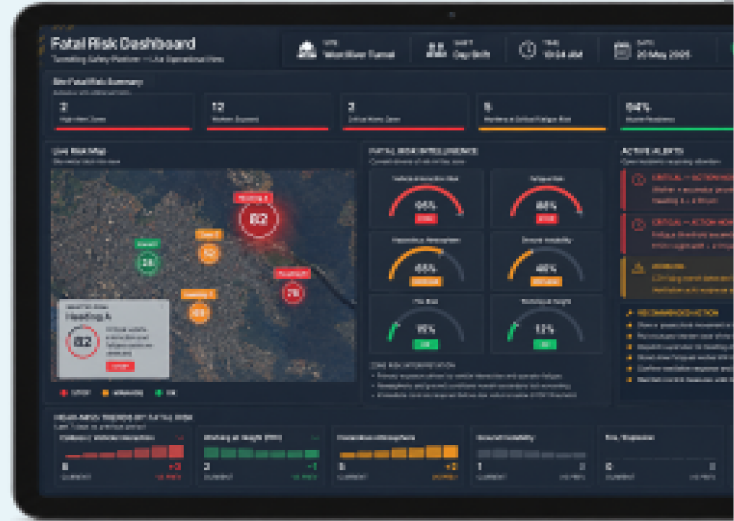

Predicting Risk
Before It Escalates
Traditional safety systems record incidents after they occur.
Traditional safety systems record incidents after they occur. iottag focuses on identifying the conditions forming before they happen. By analysing interactions between personnel, vehicles, equipment, environmental conditions and operational activities, the platform helps organisations identify emerging exposure before incidents occur.
The Invisible Risks
Behind Serious Incidents
Major incidents rarely result from a single failure.
They develop when operational pressures, environmental conditions and human factors begin interacting beneath normal operations.
Common fatal risk categories include:
Vehicle interaction

Working at heights

Machinery hazards
Ground instability
Fatigue risk
Environmental hazards
Fatal Risk Dashboard
The Fatal Risk Dashboard provides a live operational view of developing risk across the worksite.
Insights are visualised directly across the operational map, enabling:
- Real-time situational awareness
- Live risk trends and hotspot visibility
- Predictive forecasting of escalating exposure
- Earlier intervention and proactive prevention

From Detection To Prevention
Detect
Sensors and systems feed real data into one platform
Understand
AI finds patterns humans would miss in isolation
Communicate
Alert the right people at the right moment with context
Act
Intervention happens before the incident becomes inevitable